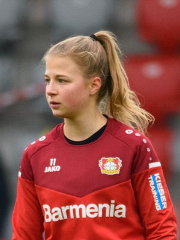

Ezzcoins › Player pages › Kristin Kögel
82
LM

Kögel
PAC87
SHO79
PAS77
DRI81
DEF46
PHY70
Photo (cropped): EL Loko Foto · CC BY 4.0 · Wikimedia Commons
Photo source
https://commons.wikimedia.org/wiki/File:Kristin_K%C3%B6gel_20201206_(cropped).jpg
Licence: https://creativecommons.org/licenses/by/4.0
Kristin Kögel
82 LM · Strasbourg · Arkema PL ·  Germany
Germany
No console price yet. Add this player to your watchlist on Ezzcoins: the most-watched players get a price every hour.
PAC87
SHO79
PAS77
DRI81
DEF46
PHY70
- Position
- LM (also LW)
- Club
- Strasbourg
- League
- Arkema PL
- Nation
- Germany
- Skill moves
- 3★
- Weak foot
- 4★
- Preferred foot
- Left
- Football
- Women's football